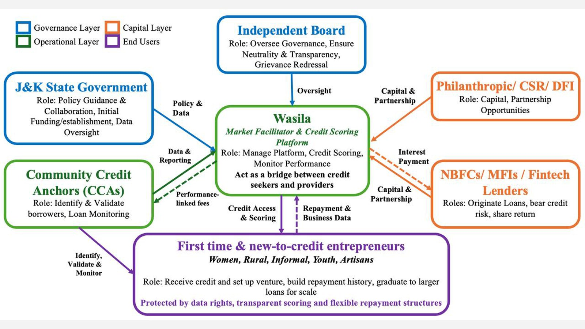
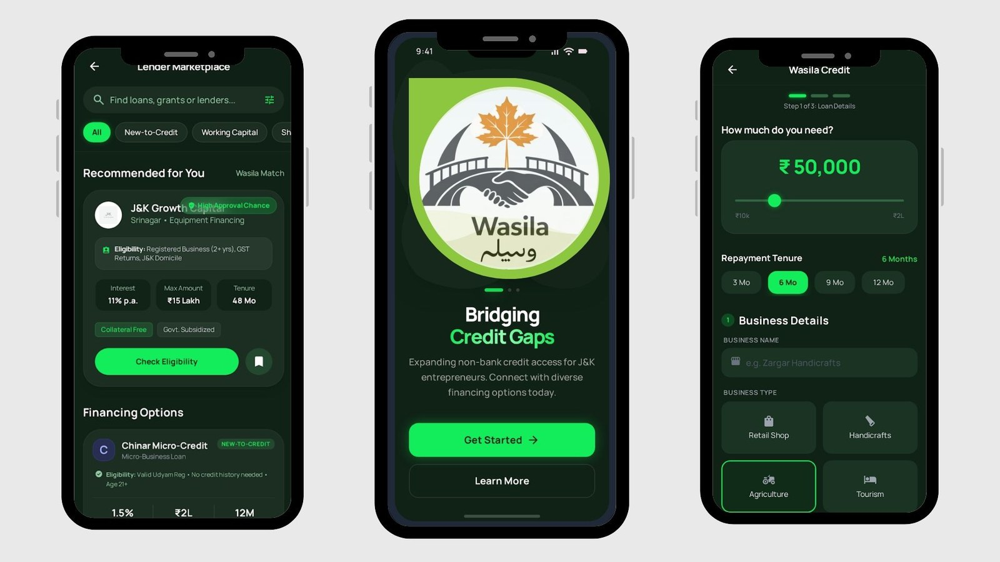
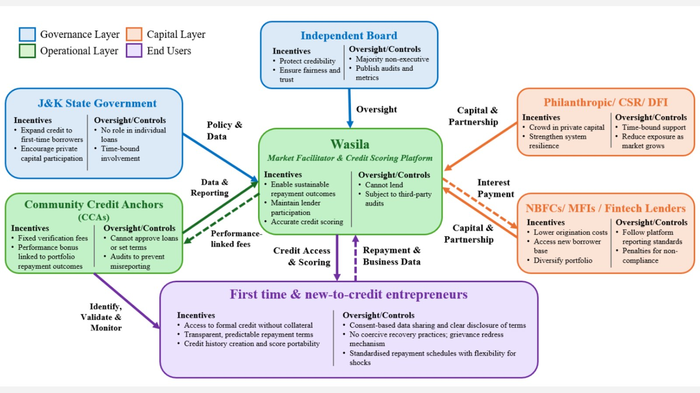
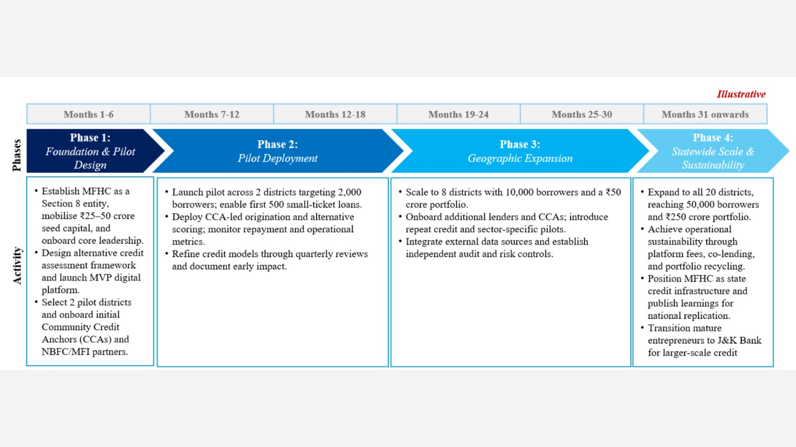

Harvard Policy Hackathon 2025 · Problem Statement A
Wasila
A policy brief on expanding non-bank credit for first-time entrepreneurs in Jammu and Kashmir. The constraint is not capital. It is a system built for a formal economy, applied to an informal one. 25 December 2025.
| Brief | Harvard Policy Hackathon 2025 · Expanding Non-Bank Credit Access for Entrepreneurship |
|---|---|
| Place | Jammu and Kashmir |
| Team | Arz Taneja, Avantika Rajaram, Rachel Batra, Sakshi Singh |
| Proposal | State-sponsored special purpose vehicle, structured as a Microfinance Holding Company |
The paradox
The brief opens with a credit paradox. J&K has entrepreneurial activity and relatively strong banks. Credit-deposit ratio above 60 percent. NPAs around 3.3 percent. More than 80 percent of disbursements still go through banks, and a large share through one institution. First-time and new-to-credit entrepreneurs stay out.
Startup Policy 2024-27 puts enterprise on the agenda. Exclusion persists because bank tools (collateral, papers, a credit history, a rigid EMI) are built for a formal economy and applied to an informal one. J&K Bank has used SHG participation for some lending. That does not reach everyone. The line in the brief is the point of the whole piece: credit access is constrained not by viability, but by the system’s inability to recognise creditworthiness at entry.
Where the chain breaks
The brief refuses to treat exclusion as generic bank risk aversion. Credit moves through a sequence. Each stage has its own actors and its own failure:
Origination → Assessment → Disbursal → Repayment → Repeat credit
People exit early. No single lender can fix the whole path.
Origination
Bank-led, thin non-bank and fintech presence. Informal, home-based, or geographically scattered enterprises never enter the funnel. Last-mile costs are high. Digital-only models are not trusted enough to replace a branch. The funnel is already narrow before anyone asks for a score.
Assessment
Collateral, historical credit, standard documents. First-time and informal businesses have real activity and weak paper. Seasonal income, fragmented records, thin digital trails. Rejection at assessment is often an inability to read cash flow, market participation, or community validation, not an absence of work.
Disbursal
Standard EMIs assume a smooth monthly cash flow. Horticulture, handicrafts, tourism do not. For these enterprises, timing matters more than the interest rate, and flexibility matters more than the headline size of the loan. Formal institutions have little reason to redesign the product around irregular repayment. Viable borrowers then take on stress, default, or leave before they start.
Repayment and repeat credit
Lenders lack soft enforcement: community accountability, peer checks, schedules that move with the season. Borrowers fear debt and unforgiving EMIs. The gap is risk perception versus risk reality. Each cycle is a new application. No automatic limit for a good book. Enterprises stay permanently small.
What Wasila is
The recommendation is a state-sponsored special purpose vehicle, structured as a Microfinance Holding Company. It is not another lender. It is a credit-market infrastructure layer: unified intake, alternative scoring, community verification, and a digital lender-borrower marketplace. Lenders keep their own books. Wasila does not pretend the answer is more bank branches.
Two jobs sit on that layer. First, de-risk origination so NBFCs, impact investors, DFIs, and CSR-linked capital can come in without carrying the local monitoring load alone. Verification and governance sit with the holding company. Capital stays with the lender. Second, a marketplace where those lenders meet pre-scored borrowers. Scoring, validation, and monitoring are the infrastructure. Greenfield work needs patient, still-disciplined money.

Figure 4 in the appendix is the institutional map. An independent board oversees neutrality and grievance redressal. The state gives policy, initial funding, and data oversight. Community Credit Anchors identify and validate borrowers. NBFCs, MFIs, and fintechs originate and hold the credit risk. Philanthropic, CSR, and DFI money sits as partnership capital. The end users named on the diagram are first-time and new-to-credit entrepreneurs: women, rural, informal, youth, artisans.
Score the informal economy
NSS 2015-16: on the order of 413,250 MSMEs in the region, and about 400,000 craftspeople, of whom 2.33 lakh remain unregistered. Micro and nano firms are scattered and seasonal. Documentation-heavy, collateral-based scores do not travel.
The second recommendation is a scoring frame that can read non-traditional signals. The brief splits inputs into three:
- Behavioural: input purchase patterns, mobile payment history, SHG participation, digital transaction history.
- Entrepreneurial potential: mandi sales, prevailing market conditions.
- Social validation: district CCA reports, residential stability, past-employer recommendations, the relationship with the input supplier, customer review.
A real-time repository sits under that, fed by government bodies, entrepreneurs, and financial institutions, so a score can move and a borrower can see it in the Wasila app instead of waiting on a loan manager’s discretion. Sparse data is not meant to become an automatic downgrade. The Kenya comparison in the brief is M-Shwari: mobile transaction history, savings patterns, telecom signals; more than 54 percent of users had no bank account; 20.6 million short-term loans disbursed.

Figure 1 is the high-fidelity prototype. A single-window application. Registration for nano enterprises. Risk tiers visible to lenders. Direct origination to a pre-scored borrower. Offline facilities sit next to the app, because digital infrastructure in the state is not a given. The platform is written as public infrastructure, not a data extractor: consent, correction, portability, World Bank and CAGP-aligned safeguards.
Community Credit Anchors
CCAs are employed by the holding company. They localise verification, collect the non-traditional data, onboard new micro enterprises, and file periodic reports after disbursal. They do not approve loans, set interest, or restructure. Random audits and penalties sit on false reporting, so elite capture does not become the model. Self-reporting on the app is the other half of that: registration is a check against multiple identities, and a first step toward formalising a nano firm without dumping a full compliance load on day one.

Figure 2 is the incentive map. The state wants first-time borrowers reached and private capital in, without sitting on individual loans. Lenders want lower origination cost and a new borrower base, with reporting standards attached. CCAs are paid for verification, with a performance bonus tied to portfolio repayment, and they cannot approve. Entrepreneurs get collateral-free entry, a portable score, and repayment that can flex for a shock. Wasila itself cannot lend. That is the point of the layer.
How it would be stood up
Implementation is written as ground-up, with existing actors, not a replacement for them. Local sourcing, decentralised decisions, pilots before scale.

Figure 3, marked illustrative in the brief, runs in four phases. Foundation and pilot design: a Section 8 entity, ₹25-50 crore seed, two districts, CCAs and NBFC partners, an MVP of the scoring frame. Pilot deployment: 2,000 borrowers, the first 500 small-ticket loans, quarterly model reviews. Geographic expansion: eight districts, 10,000 borrowers, a ₹50 crore portfolio, repeat credit and sector pilots. Statewide scale: all 20 districts, 50,000 borrowers, ₹250 crore, fees and co-lending so the platform is not a programme forever. Mature borrowers graduate toward J&K Bank for larger credit. Success, the conclusion says, is not volumes disbursed. It is less friction at entry, lenders other than banks, and a predictable path into formal finance.